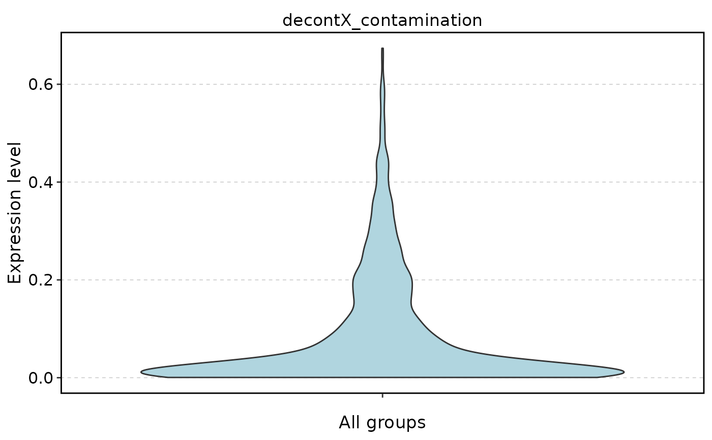
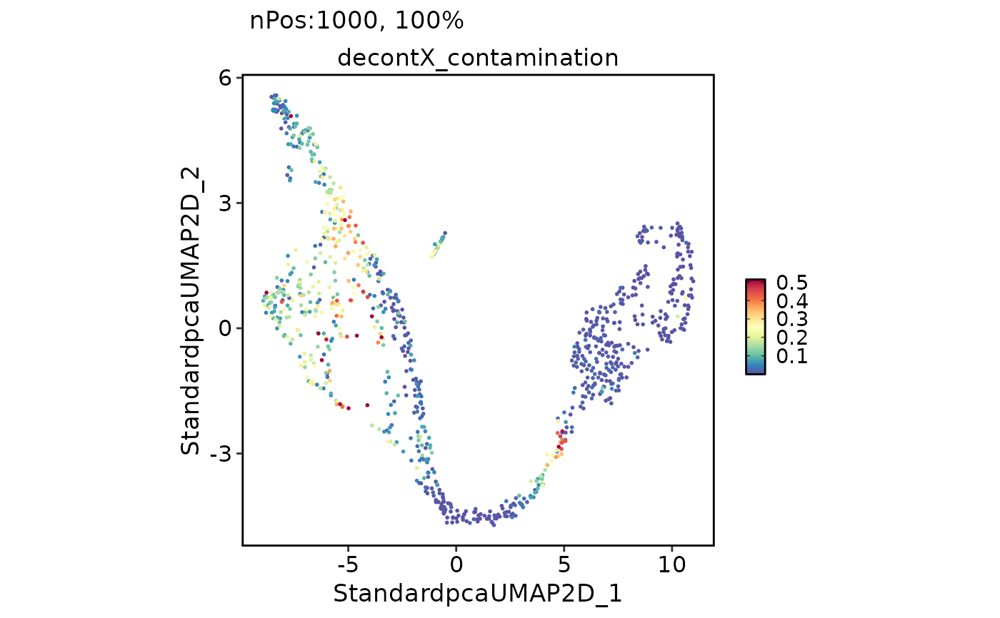

Ambient RNA decontamination with decontX
Usage
RunDecontX(
srt,
assay = "RNA",
group.by = NULL,
batch = NULL,
background = NULL,
background_assay = NULL,
bg_batch = NULL,
assay_name = "decontXcounts",
store_assay = TRUE,
round_counts = FALSE,
data_type = NULL,
seed = 11,
...,
verbose = TRUE
)Arguments
- srt
A
Seuratobject.- assay
Assay to decontaminate.
- group.by, batch
Cell cluster and batch labels passed to
decontX::decontX(). Column name, cell-aligned vector, orNULL.- background
Background / empty-droplet input: a
Seuratobject,SingleCellExperiment, or count matrix.- background_assay
Assay used when
backgroundis aSeuratorSingleCellExperiment.NULLusesassay(Seurat) or"counts"(SCE).- bg_batch
Batch labels for
background.- assay_name, store_assay, round_counts
Store rounded decontaminated counts as a new assay.
- data_type
Optional
CheckDataType()result, used internally to avoid rescanning the count matrix.- seed
Random seed.
- ...
Passed to
decontX::decontX().- verbose
Whether to print messages.
Value
A Seurat object with decontX contamination in meta.data and
optional decontaminated counts in a new assay.
Examples
data(pancreas_sub)
pancreas_sub <- RunStandardWorkflow(pancreas_sub)
#> ℹ [2026-08-29 09:28:48] Start standard processing workflow...
#> ℹ [2026-08-29 09:28:48] Checking a list of <Seurat>...
#> ! [2026-08-29 09:28:49] Data 1/1 of the `srt_list` is "unknown"
#> Warning: Data 1/1 of the `srt_list` is "unknown"
#> ℹ [2026-08-29 09:28:49] Perform `NormalizeData()` with `normalization.method = 'LogNormalize'` on 1/1 of `srt_list`...
#> ℹ [2026-08-29 09:28:49] Perform `FindVariableFeatures()` on 1/1 of `srt_list`...
#> ℹ [2026-08-29 09:28:49] Use the separate HVF from `srt_list`
#> ℹ [2026-08-29 09:28:49] Number of available HVF: 2000
#> ℹ [2026-08-29 09:28:49] Finished check
#> ℹ [2026-08-29 09:28:49] Perform `ScaleData()`
#> ℹ [2026-08-29 09:28:49] Perform pca linear dimension reduction
#> ℹ [2026-08-29 09:28:49] Use stored estimated dimensions 1:23 for Standardpca
#> ℹ [2026-08-29 09:28:50] Perform `Seurat::FindClusters()` with `cluster_algorithm = 'louvain'` and `cluster_resolution = 0.6`
#> ℹ [2026-08-29 09:28:50] Reorder clusters...
#> ℹ [2026-08-29 09:28:50] Skip `log1p()` because `layer = data` is not "counts"
#> ℹ [2026-08-29 09:28:50] Perform umap nonlinear dimension reduction
#> ✔ [2026-08-29 09:28:57] Standard processing workflow completed
pancreas_sub <- RunDecontX(
pancreas_sub,
group.by = "CellType"
)
#> ℹ [2026-08-29 09:28:57] Running decontX
#> ℹ [2026-08-29 09:28:57] Data type is raw counts
#> Warning: 'librarySizeFactors' is deprecated.
#> Use 'scrapper::centerSizeFactors' instead.
#> See help("Deprecated")
#> Warning: 'normalizeCounts' is deprecated.
#> Use 'scrapper::normalizeCounts' instead.
#> See help("Deprecated")
#> ℹ [2026-08-29 09:29:11] decontX contamination (median/mean/max): 0.0272 / 0.0875 / 0.6737
#> ℹ [2026-08-29 09:29:11] decontX assay stored as decontXcounts
#> ✔ [2026-08-29 09:29:11] decontX decontamination completed
FeatureStatPlot(
pancreas_sub,
stat.by = "decontX_contamination"
)
#> Warning: No shared levels found between `names(values)` of the manual scale and the
#> data's colour values.

FeatureDimPlot(
pancreas_sub,
features = "decontX_contamination"
)
